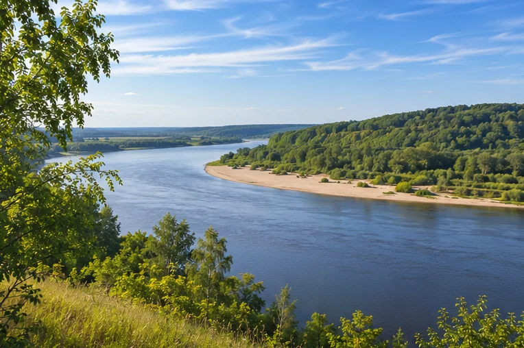

ПредварительныйТаруса — Поленово
Выход на воду у Тарусы, переход к берегу у Поленова и возвращение в тот же день.
Подробнее
Перед поездкой выберите место спуска и проверьте, где можно причалить у Поленова. Оставьте время на возвращение против течения.